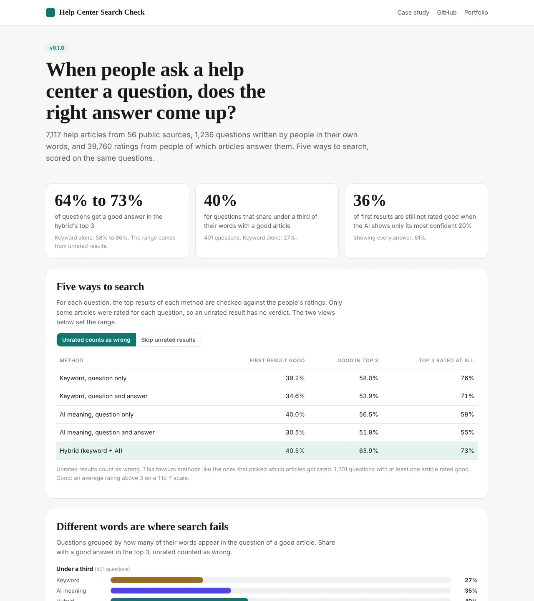

The question
Does a good article come up first, or at least in the top 3? Where does search fail, does AI fix those cases, and can a score tell when to say "no good answer"?

Headline numbers
| Method | Good in top 3 |
|---|---|
| Keyword, question only | 58% to 66% |
| Keyword, question and answer | 54% to 64% |
| AI, question only | 57% to 71% |
| Hybrid | 64% to 73% |
Lower number: unrated results count as wrong. Higher number: unrated results skipped.
Findings
Different wording is where search fails
401 questions share under a third of their words with any good article. Keyword search gets a good top 3 for 27% of them, the hybrid for 40%. When the words match, all methods do well.
Search the article question, not the whole article
Adding the answer text made keyword and AI search worse in both views. Titles deserve the most care.
The score can't tell when to say "no good answer"
Showing only the AI's most confident 20% of answers still leaves 36% not rated good. Questions with no good article score slightly higher than the rest.
The test set may favour older methods
Only 58% of the AI's top 3 results were rated, against 76% for keyword search. Whether AI beats keyword search alone depends on how unrated results are counted.
What I would do next
- Rate 100 unrated results to narrow the range.
- Pick the hybrid's inputs on half the questions and test on the other half.
- Add a second model that checks whether the top article answers the question.
Data: COUGH (EMNLP 2021), CC BY-NC-SA 4.0. Questions are people's rewordings of FAQ items, not search logs. Not health advice.